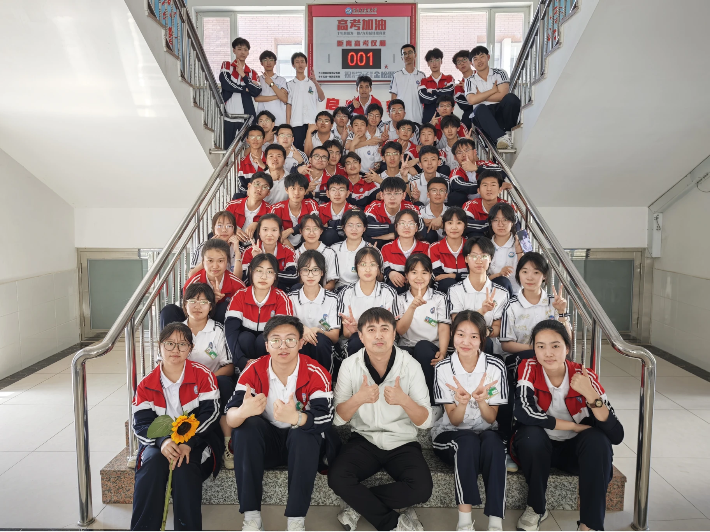
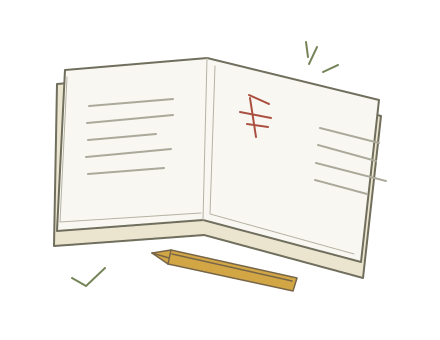
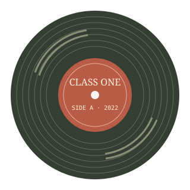

THE CHAPTERS / 目录
从哪一页开始？
没有标准的阅读顺序。
从一个熟悉的名字，或一件想起来就会笑的事开始。

2022级一班，顾名思义是2022年入学的学生组成的班级，属于彰武县高级中学的重点班级之一，由于定时分班机制人员具有流动性，因而也招引了一大批神人。

WORDS WE REMEMBER
「你们就是
大没心！」

PRESS PLAY / 旧日声音再听一次，
再听一次，
那天的声音。
最后一次班会，原声留存。
按下播放，好像还坐在教室里。
最后一次班会
01 / 非常规位记录最后一次班会续
02 / 真情流露MARGIN NOTES / 回忆碎片
记得这件小事吗？
2025.3.4 放学铃提前
陆长平借英语听力试音，将延时放学铃前调数分。
2025.3.4
厕所八仙
高三某晚饭后回班，八人在厕所玩闹，被邻班听到；当时大雪，八仙在教室后柜子站了一周。
高三 · 冬
手腕争霸赛
4.2 日晚间，力与力的角斗，只听“崩”的一声巨响，人连夜飞到医大二。
4.2
开学视频事件
IMO 交流群如法炮制暂停开学的视频，陆某含泪收取 5 元制作费后清记录跑路，最终一位倒霉蛋转微博被全校通缉。
高一 · 1月
放歌
陆某成了一高专项点歌工具人，用一首《只因你太美》点燃操场，此后这项活动渐渐被停止。
高一
那首关于开会的小诗
“本知今日没有会，却还让我去开会”——陆某记错开会时间后的即兴创作。
高一
郑玉哲
一班传奇人物。强制分班而来、并不愿留，周旋数月后成功逃逸，平行班里能超过大部分重点班的学生。
班主任的反面教材
王鹏越
被尊称“博士”。学习能力强但逻辑古怪，高二阑尾炎硬挺一年，此后习惯装病回家，高三停学留级。
装病行为成了一大娱乐项目
王际哲
平平无奇的普通学生，但先天嘲讽圣体：班主任投掷道具仅有的两次击杀记录皆为同一人。
高一 · 高三
LEAVE A NOTE / 留言板来都来了，
来都来了，
留一句再走。
补一段回忆，打个招呼。
这里总有一页，留给后来回来的你。
来自这一页的朋友们
正在翻开留言…